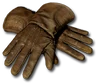
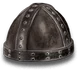

Set - Heyday
JBouley's Scion
4 items, level 35

Shadow Ninja
Trellised Armor
Defense: 138-153
Required Level: 35
+200-400 Defense
+100-200% Enhanced Defense
15% chance to cast level 5 Dim Vision on striking
+20% Faster Run/Walk Speed
(3 items) +100% Enhanced Weapon Damage
(4 items) Adds 25-50 Damage

Night's Caress
Demonhide Gloves
Defense: 28-35
Required Level: 32
+X Defense (X = 2 x character level)
+20% Increased Attack Speed
+X to Maximum Weapon Damage (X = 1 x character level)
(3 items) +25% to All Resistances

Mystic Blades
Barbed Shield
Defense: 58-78
Chance to Block: 17%
Required Level: 35
+50% Enhanced Weapon Damage
+25% Increased Attack Speed
+30% Faster Block Rate
Adds 25-50 Damage
(2 items) Adds 25-50 Damage
(3 items) +5% Life stolen per hit
(4 items) +5% Mana stolen per hit

Fade to Black
Sallet
Defense: 52-62
Required Level: 25
+1 You feel incorporeal...
+20% to All Resistances
+X to Life (X = 1.5 x character level)
+X to Mana (X = 1.5 x character level)
+X Defense (X = 1.5 x character level)
(2 items) +10% Physical Damage Reduction
Set bonuses
- 2 items: +X% Deadly Strike (X = 0.375 x character level)
- 3 items: +30% Increased Attack Speed, +30% Faster Run/Walk Speed
Full set
- +40% to All Resistances
- +10% to Experience Gained
- +50% Chance of Open Wounds
- +100% Chance Items Roll Magic or Better
- +100% Extra Gold from Monsters